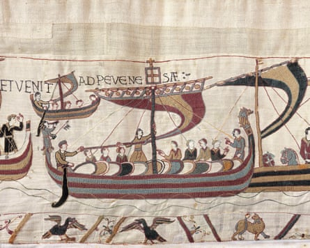

“Angli et Franci” – these Latin words embroidered on the Bayeux tapestry may be the first time those cartoon rivals, the English and the French, were named together. But in one of the shifts from triumph to horror that make this epic work of art still gripping almost a millennium after it was made, the full sentence reads: “Here at the same time the English and French [or Angles and Franks] fell in battle”. Below the black lettering, horses and chainmailed riders are thrown about and upside down in a bloody tangle. In the lower margin lie corpses and a severed head.
Now, in an unprecedented piece of cultural diplomacy between the Angli and Franci, this 70-metre long Romanesque wonder, preserved for centuries in Bayeux, Normandy, is to go on show at the British Museum . In exchange, Sutton Hoo treasures and the Lewis chessmen will go to France. When it opens in September 2026 this will surely be one of the British Museum’s most popular shows ever – for every British schoolchild learns this is not just a work of art, but a document of our history and who we are.
It will not disappoint. This is the most engaging depiction ever made of a mighty battle. Beside it, Rome’s Dacian wars on Trajan’s column or the Louvre’s paintings of Napoleon’s campaigns are cold. Imagine if Ridley Scott in his prime had made a film about the Battle of Hastings with severed body parts flying towards the screen as the Normans unleash hell: it still wouldn’t be as thrilling as the gut-punch of the Bayeux tapestry. These deceptively simple, hand-stitched drawings pull you into a narrative of friendship and betrayal, vengeance and despair, unlocking unfiltered feelings and showing you war as both glorious exploit and futile carnage.
One possible reason the Bayeux tapestry sees war so clearly is that it was made by women. Commissioned, it’s believed, by Odo, bishop of Bayeux and William the Conqueror’s half-brother, the work was probably done in Canterbury by Anglo-Saxon noblewomen. When they embroidered a scene in which a woman and child flee a house torched by Norman warriors, it surely reflects a female experience of war.
Yet it is not pacifist, or pro-Saxon. It tells the story of the Norman conquest from the Norman point of view. The Normans had been Vikings a couple of generations back, but by the 1060s they were part of a new European civilisation built on feudalism and chivalry. The tapestry takes you into their world, in which the most important thing you can do is make an oath before God – and the worst is to break it.
That is what the Saxon noble Harold Godwinson is shown to do. In the first scene he’s pally with the childless English King Edward, whom he hopes to succeed. Then he rides, moustache flying, to his manor, where he prays and banquets before starting a French trip. His ships are blown off course, he’s held hostage but rescued by William of Normandy. They become battle brothers, attacking castles together. But not equals. In a scene fraught with passion, Harold stretches out his arms to touch holy relics as he swears loyalty to William.
He swore! On relics! So when William hears that in spite of this ritual of subjection, Harold sits on the English throne, he doesn’t hesitate. Ships are built, loaded with weapons and wine. The Normans come for Harold.
You can see how recently the Normans were Vikings: William’s war fleet sails for England.Photograph: Bayeux Museum
The world here is boldly delineated, sharply lived. These people are so impulsive they don’t worry about contradictions. Bishop Odo blesses the feast, as you’d expect. Then he is seen at the heart of battle. When it’s looking like a slaughter with no winners, it is Bishop Odo who rallies the Normans. Suddenly it all goes their way. The technically advanced Normans control their horses with the new-fangled stirrup – they can ride and wield javelins at the same time.
The Saxon shield wall shatters, the last survivors driven into small bands to be picked off. Harold is hit by that famous arrow, a straight black line sliding in under his helmet. “Harold Rex interfectus est,” King Harold is killed.
When the battle’s lost and won, Britain is a different place. We don’t see what came next, the castles, the harrying of the north, the Domesday Book – but all that, and Britain’s entire future, is implied. William’s steely knights become the architects of a new kind of national state.
The tapestry makes it a human story. William starts out as a generous noble saving his friend Harold. Anger turns him into something colder: his vengeance has a monstrous finality. Not just Harold but the Anglo-Saxon age has to die, all because of a broken oath and a failed bromance. “Men, eh,” you can hear the women whisper as they create our history’s most beguiling, devastating document.
Five highlights to look out for
Numbers in brackets can be found on this visual guide .
- (23) In an emotional rite, Harold reaches wide to touch relics as he swears fealty to William as his overlord. William sits enthroned, commanding him. It’s like a scene from Shakespeare.
- (38) You can see how recently the Normans were Vikings as William’s war fleet sails. These longships look like Norse ships that survive at Roskilde, Denmark, as the historian Marc Morris has observed. The artistry is ravishing; each ship and sail is embroidered in coloured stripes. The beasts below are just for fun.
- (47) This scene is where the tale of chivalry turns brutally honest. For no apparent reason, the Normans burn a house as a woman and child get out just in time. The mother speaks to them as if asking: why?
- (51) Look, they’re riding with no hands! In a river of steel, the Norman cavalry charge into action, a disciplined, irresistible force, their feet in hi-tech stirrups that let them concentrate on levelling their spears and using their shields. Even so, the fighting will become a bloody mess.
- (57) And it’s all over. Harold stands among his last band of vassals, his hand on the arrow that has hit him in the eye or head. You feel his shock, trying in his final moment to remove the lethal shaft or just grabbing it in disbelief. At his feet, the dead are being stripped of their precious chainmail.